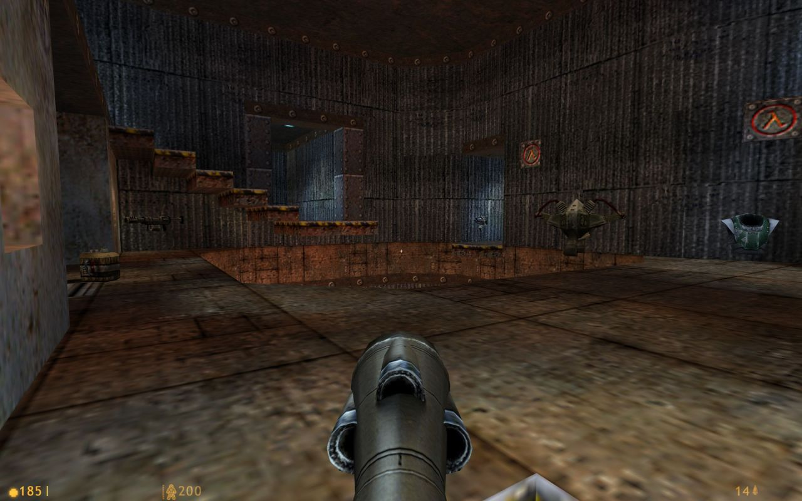

dm4 for Deathmatch Classic by Valve
Another quake-inspired map featured on @goldsourcegold, the inspiration for this blog :)
Aw, shucks. And thanks!
Great to have these ‘digital tourism’ blogs. Might have to add a Source one soon, that engine is reaching retro status at 12 years old.